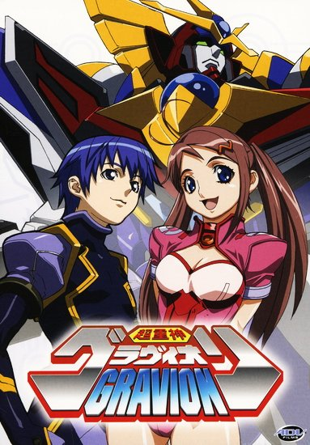

Английское название: Super Heavy God Gravion
Русское название: Гравион
Число серий: TV 12 эп (2 сезона).
Жанр:Приключения, фантастика, меха, этти
Создатели:Обари Масами
Оценка:6.8/10
Год выпуска: 2002-2004

Описание аниме: Год 2041. Новый враг по имени Zerabaia внезапно появляется в солнечной системе, разрушая все военные сооружения, встречающиеся ему на пути. Однако, могущественный Дрема Кляйн уже знает об этом запланированном вторжении и тайно подготовил свою армию к сражению. Его козырная карта - Gravion, гигантский робот, воплощение новейших технологий человеческой мысли.
Тем временем молодой человек по имени Eiji, в поисках потерявшейся сестры тайно проникает в организацию Дремы Кляйна. Именно там он встречает другого молодого человека по имени Тоги... Вот эти два героя вместе с четырьмя другими людьми теперь и будут бороться с Zerabaia на борту робота Gravion, чтобы защитить землю от нависшей угрозы.
Назад